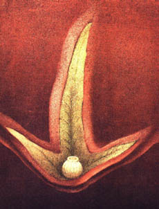

Abych pravdu øekl, nijak mì ta pøíhoda nepoznamenala. Díval jsem se nato jako na koníèka, jako je tøeba sbírání známek. A zapomnìl jsem na to.
Kdy¾ jsem se vrátil z války, dostával jsem jen nepatrný demobilizaèní pøíplatek, ale velice jsem tou¾il nadýchat se èerstvého vzduchu. Bez jakéhokoliv jiného úmyslu jsem se vydal na cestu do tìch pustých konèin.
Kraj se nezmìnil. Pøesto jsem za opu¹tìnou vesnicí spatøil v dálce jakousi ¹edou mlhu. Pokrývala kopce jako nìjaký koberec. Od pøedchozího dne jsem zaèal myslet na stromy. Øíkal jsem si: “Deset tisíc stromù zabírá poøádnì velkou plochu.”
Pøíli¹ mnoho lidí jsem vidìl za tìch pìt let umírat, proto jsem si dokázal snadno pøedstavit i Elzéarda Bouffiera. Zvlá¹» kdy¾ je nám dvacet let, padesátiletí mu¾i se nám zdají starci, které èeká u¾ jen smrt. Ale Elzéard Bouffier nebyl mrtev. Dokonce byl je¹tì plný ¾ivota. Zmìnil zamìstnání. Mìl u¾ je

n ètyøi ovce, ale zato asi sto úlù. Zbavil se ovcí, proto¾e ohro¾ovaly vysázené stromy. Øekl mi toti¾, a já jsem to také postøehl, ¾e se o válku vùbec nestaral. Vytrvale sázel dál stromy.Duby z roku 1910 byly deset let staré a byly vy¹¹í ne¾ já i on. Byla to nádherná podívaná. Doslova jsem onìmìl ú¾asem. A proto¾e Elzéard Bouffier nemluvil, procházeli jsme se v jeho lese mlèky. Na nej¹ir¹ích místech dosahoval les jedenácti kilometrù. Kdy¾ si uvìdomíme, ¾e v¹echno to bylo dílem rukou a ducha toho mu¾e, který nemìl øádné technické prostøedky bylo zøejmé, ¾e by lidé mohli být stejnì jako Bùh èinní v jiných oblastech nì¾ v pusto¹ení.
Elzéard Bouffier ¹el za svou my¹lenkou a dùkazem toho byly buky, které mi sahaly po ramena. Bylo jich do nedohledna. Duby byly statné a pøekroèily u¾ stáøí, kdy je mohou nièit hlodavci. A kdyby bylo zámìrem Prozøetelnosti dílo znièit, potøebovala by k tomu pøímo cyklony.
Elzéard Bouffier mi ukázal obdivuhodné háje bøíz.. Bylo jim pìt let, byly toti¾ vysázeny v roce 1915, tedy v dobì, kdy jsem bojoval u Verdunu. Sázel je na v¹ech místech, kde právem tu¹il, ¾e témìø hned pod povrchem je vláha. Byly útlé, mladistvì svì¾í a plné odhodlání.
Zdálo se ostatnì, ¾e pøi rùstu vytváøejí pásma. O to se v¹ak nestaral. Vytrvale plnil svùj prostý úkol. Ale kdy¾ jsme se vraceli vesnicí domù, vidìl jsem, jak v potocích od nepamìti vyschlých, teèe voda. Byl to ten nejú¾asnìj¹í výsledek práce, jaký jsem kdy vidìl. Ve velice dávných dobách v tìch vyschlých potocích také tekla voda.
Nìkteré ze smutných vesnic, o nich¾ jsem se na zaèátku vypravování zmínil, byly postaveny na místech, kde kdysi stály starobylé vesnice galorománské. Zbývaly je¹tì po nich stopy. A kdy¾ tam archeologové dìlali prùzkum, na¹li udice v místech, kde ve dvacátém století bylo nutné mít cisterny, aby mìli trochu vody.
Také vítr rozná¹el nìkterá semena. Kdy¾ se objevila voda, objevily se také vrby i vrby ko¹aøské, louky, zahrady, kvìtiny, a tak i jakýsi dùvod ¾ít.